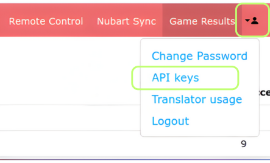
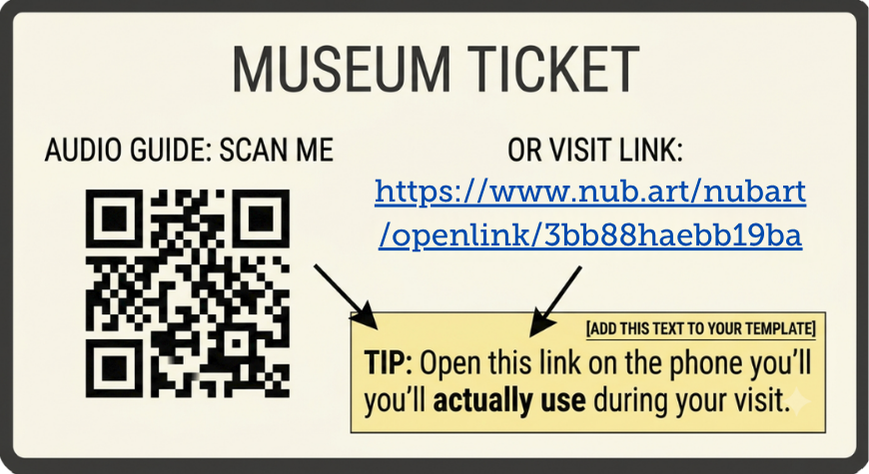

- Startseite
- Nubart GUIDE
- Nubart GUIDE-Zugänge über Ihren Online-Shop verkaufen

Nubarts Team
IT-Entwicklung
Nubart GUIDE-Zugänge über Ihren Online-Shop verkaufen – Implementierungsleitfaden
Auf dieser Seite erfahren Sie, was Ihr Museum wissen sollte, bevor Sie Ihren Webentwickler oder Ticketing-Anbieter mit der Anbindung Ihres Online-Shops an Nubart GUIDE beauftragen. Sie erklärt, wie die Integration funktioniert, was Ihr Entwickler benötigt, wie Sie Ihre API-Zugangsdaten sicher weitergeben und welches wichtige Implementierungsdetail spätere Probleme für Ihre Besucher vermeidet.
Bevor Sie beginnen
Bevor Sie Ihren Entwickler mit der API-Integration beauftragen, stellen Sie bitte sicher, dass Folgendes vorhanden ist:
- Ein Administratorkonto im Nubart-Kundenportal
- Das Modul, das online verkauft werden soll, wurde festgelegt
- Es ist entschieden, wer den API-Schlüssel abruft (siehe unten)
- Der Link zur technischen Dokumentation oben, bereit zur Weitergabe an Ihren Entwickler
Was die API tatsächlich liefert
Die API erstellt keine andere Version von Nubart GUIDE. Sie liefert lediglich denselben sicheren Zugangscode in digitaler Form, anstatt ihn auf einer physischen Karte bereitzustellen. Statt dem Besucher am Ticketschalter eine Karte auszuhändigen, fordert Ihr Online-Shop den Code im Moment des Kaufs bei Nubart an und stellt ihn dem Besucher als Teil seines Tickets zur Verfügung.
Alles, was die Kartenversion auszeichnet – Nicht-Übertragbarkeit, kein Login, keine App – funktioniert in der digitalen Version genauso.
So erhalten Sie Ihren API-Schlüssel
Für die Anbindung Ihres Online-Shops benötigt Ihr Webentwickler Ihren API-Schlüssel. Aus Sicherheitsgründen haben wir als Nubart-Mitarbeiter keinen Zugriff auf diesen Schlüssel. Nur Benutzer mit der Rolle „Admin“ können Ihren API-Schlüssel abrufen. Das bedeutet in der Praxis, dass vor Beginn der Implementierung zunächst ein zusätzlicher Schritt erforderlich ist, um den Schlüssel Ihrem Webentwickler zur Verfügung zu stellen.

Option 1: Geben Sie Ihrem Webentwickler vorübergehend Administratorrechte
Der einfachste Weg ist, Ihren Webentwickler in Ihr Nubart-Kundenportal einzuladen. Dort kann er den API-Schlüssel selbst abrufen. Dies ist im Reiter „Mitarbeiter“ möglich. Der Nachteil besteht darin, dass Ihr Webentwickler dadurch nicht nur Zugriff auf den API-Schlüssel erhält, sondern vollständige Administratorrechte. Er kann also beispielsweise auch die Nutzungsstatistiken Ihres Audioguides einsehen. Wenn Sie diesen Zugriff nicht dauerhaft gewähren möchten, können Sie nach Abschluss der Implementierung zum Reiter „Mitarbeiter“ zurückkehren und den Benutzer dort wieder sperren.
Option 2: Ein Administrator ruft den Schlüssel ab und gibt ihn sicher weiter
Wenn Sie Ihrem Webentwickler keinen Zugang zum Kundenportal geben möchten, kann sich stattdessen einer der Benutzer mit der Rolle „Admin“ anmelden, den API-Schlüssel kopieren und ihn über einen sicheren Übertragungsweg weitergeben.
Hier sind einige Möglichkeiten – von der einfachsten bis zur aufwendigsten:
- Speichern Sie den Schlüssel als gemeinsamen Eintrag in Ihrem Passwortmanager und geben Sie Ihrem Webentwickler Zugriff darauf.
- Teilen Sie den Schlüssel in zwei Hälften und versenden Sie jede Hälfte über einen anderen Kommunikationsweg – zum Beispiel die erste per E-Mail und die zweite über einen Messenger.
- Lesen Sie den Schlüssel während eines Telefonats vor, sodass Ihr Webentwickler ihn direkt in die Umgebungsvariablen des Online-Shops einträgt. So wird der Schlüssel unterwegs überhaupt nicht schriftlich übermittelt.
Für welche Methode Sie sich auch entscheiden: Wichtig ist, den vollständigen API-Schlüssel niemals als Klartext in einer einzigen E-Mail oder Chat-Nachricht zu versenden. Die Aufteilung auf verschiedene Kommunikationswege oder Zeitpunkte erhöht die Sicherheit erheblich.
Das entscheidende Implementierungsdetail: Zeigen Sie immer sowohl den Link als auch den QR-Code an
Wenn ein Besucher ein Ticket online kauft, wissen Sie im Voraus nicht, auf welchem Gerät er den Audioguide später öffnen wird. Manche öffnen den Link direkt nach dem Kauf zu Hause auf ihrem Laptop. Andere warten bis zum Museumsbesuch und scannen den QR-Code erst am Eingang mit ihrem Smartphone.
Wir empfehlen daher ausdrücklich, dass jedes Ticket sowohl den Direktlink als auch den dazugehörigen QR-Code enthält – niemals nur eines von beiden. So können Besucher später frei entscheiden, ob sie den Audioguide sofort auf ihrem Smartphone öffnen oder erst bei ihrer Ankunft im Museum nutzen möchten. Diese Vorgehensweise entspricht dem Standard unserer API und lässt sich von jedem Webentwickler problemlos in Ihre Ticketvorlage integrieren.
Außerdem empfehlen wir, neben dem Link bzw. QR-Code einen kurzen Hinweis einzufügen:
„Tipp: Öffnen Sie diesen Link auf dem Smartphone, das Sie während Ihres Museumsbesuchs verwenden werden.“
Dieser Hinweis muss von Ihrem Team in Ihre eigene Ticketvorlage eingefügt werden – Nubart fügt ihn nicht automatisch ein.

Was passiert, wenn ein Besucher den Link auf zwei verschiedenen Geräten öffnet?
Öffnet ein Besucher den Link zunächst zu Hause auf seinem PC und später denselben Link auf seinem Smartphone, wird er lediglich aufgefordert, seine E-Mail-Adresse anzugeben. Anschließend erhält er einen neuen Zugangslink für das richtige Gerät. Der Besucher behält selbstverständlich weiterhin vollen Zugriff – es kommt lediglich ein zusätzlicher Schritt hinzu.
Sobald auf diese Weise eine E-Mail-Adresse hinterlegt wurde, kann sie nicht mehr durch eine andere ersetzt werden. Dadurch ermöglicht derselbe Mechanismus sowohl den Gerätewechsel als auch den Schutz vor einer unkontrollierten Weitergabe des Zugangscodes.
Hinweis: Einige E-Mail-Dienste prüfen Links in eingehenden Nachrichten automatisch auf Sicherheitsrisiken. Unser System erkennt diese automatischen Prüfungen, sodass Ihre Besucher ihren Audioguide trotzdem problemlos öffnen können.
Ihre Auswertungen bleiben unverändert
Die Nutzung der API verändert die Darstellung Ihrer Statistiken nicht. In Ihrem Kundenbereich erscheint lediglich ein zusätzlicher Eintrag mit dem Namen Ihres Museums und dem Zusatz „(API)“ – zum Beispiel „[Name des Museums] (API)“. Dort sehen Sie, wie viele Zugriffe über die API erfolgt sind.
In den Modulstatistiken werden beide Besuchergruppen gemeinsam ausgewertet: Sowohl die Nutzung über physische Karten als auch die Zugriffe über die API fließen in dieselben Statistiken ein. So erhalten Sie einen vollständigen Überblick über die Nutzung Ihres Audioguides.
Muss dafür der Audioguide geändert werden?
Nein. Der Audioguide selbst bleibt unverändert. Lediglich die Art und Weise, wie Besucher ihren Zugangscode erhalten, ändert sich.
Was passiert, wenn meine Zugangscodes aufgebraucht sind?
Keine Sorge – Sie müssen den Bestand Ihrer Zugangscodes nicht selbst überwachen. Unser System benachrichtigt uns automatisch, sobald nur noch etwa 20 % Ihrer bestellten Codes verfügbar sind.
Ihr persönlicher Nubart-Ansprechpartner wird sich dann proaktiv mit Ihnen in Verbindung setzen und nachfragen, ob Sie weitere Codes bestellen möchten. Nach Eingang Ihrer Bestellung werden die neuen Codes innerhalb weniger Stunden aktiviert. Anschließend erhalten Sie von uns eine Bestätigung.
Fragen zur Integration?
Kontaktieren Sie unseren CTO, Simon Effing: simon.effing@nubart.eu